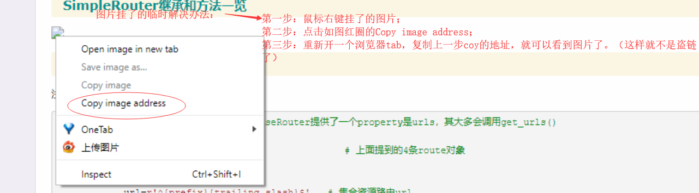

目录
github文档：axios github
该模块兼容浏览器端和node.js后端发送http请求。
***
本文主要简单介绍了请求的发送和响应callback的注册。也就是axios发送ajax请求的使用方式，至于具体的请求内容和响应内容对象属性定义；以及全局配置；拦截器功能，请移驾到axios github文档，已经很简介明了了。
博文图片挂了临时解决办法

以下config相当于是请求的内容封装对象
import Axios from 'axios'
const config = {
method: 'post',
url: '/user/12345',
data: {
firstName: 'Fred',
lastName: 'Flintstone'
}
}
Axios(config) // 发送一个post请求
// 或者 Axios(url[,config]) 只提供url参数默认发送一个get请求到url
const config02 = {
method: 'get'
}
Axios('/users/', config02) // 发送一个get请求到'/users/'
即axios实例提供了方法对了同方法名的http请求方式，不用再config参数中指定 method方法，而且将目的url和负载data都从config中剥离出来。
import Axios from 'axios'
Axios.get(url[,config])
Axios.post(url[,config])Axios.request(config)
为什么单独提出来，因为request的参数提供都是config object,而且没指定http请求的方式，类似第一种方式。
既然是ajax请求，那么对于请求的处理模式的定义其实是回调函数的定义，只不过对于响应内容封装再一个响应对象中，回调函数调用时将得到响应对象作为参数再回调中使用。
通过对象的then() api进行设置回调
import Axios from 'axios'
Axios.get(url, config).then(succc_callback, fail_callback) // 对于失败的callback也可以通过.catch（）方式添加，fail_callback的参数则是一个error对象，该对象的response属性则是响应对象了。